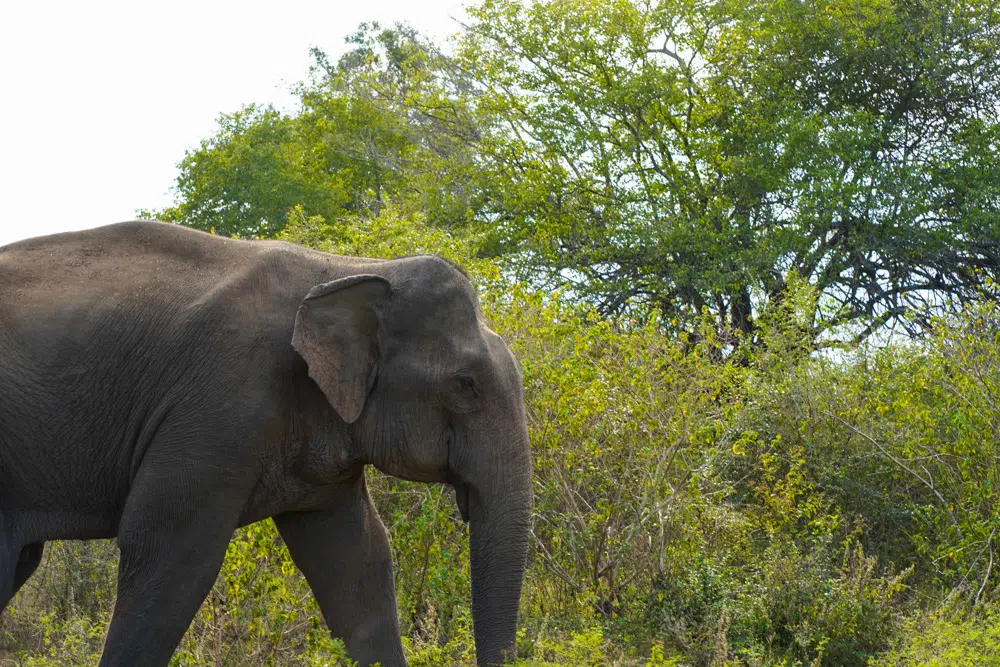
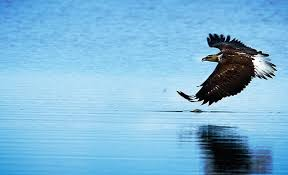
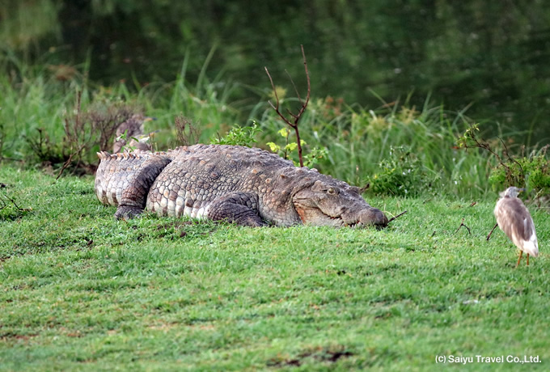

Udawalawe national park
Udawalawe National Park is one of the most famous and greatest among all national parks in Sri Lanka. This is an important protected area that is home to a considerable flora and fauna and also it is an important habitat for Sri Lankan elephants and aquatic birds. The park is 165 kilometers [103mi] away from Colombo. The total area of the Udawalawe National Park is 30,821 hectares [119 sq mi] including the Udawalawe reservoir, which covers 3405 hectares at full capacity. This national park mainly lies on the boundary of the Uva and Sabaragamuwa provinces. Boundary lines of this Udawalawe Nationa Park can be illustrated as follows: Its Southern boundary line is connected to the Udawalawe Thanamalwila road and also Sewanagala sugar plantation is located to the south of this Udawalawe Thanamalwila road. Lunugamwehera National Park is placed on the southeast boundary line of this National Park. While the western half on the left bank of the reservoir is expanded to the Ratnapura District the eastern sector on the right bank is expanded to the Monaragala District. At present, Udawalawe National Park has been remarked as one of the major and popular paradises of tourist destination and also the third most visited national park in Sri Lanka. The ecosystem of this Udawalawe National park has the ability to attract the minds of the entire world towards its affinity.
Kaudulla national park
Kaudulla national park is home to a large number of bird species, immediate surrounding of the lake is the main lodge of the birds living in the park. More than 2/3 of the bird species occurring in Sri Lankan, numbering 160 species of bird can be witnessed here. Large aqua bird species such as spot-billed pelican and lesser adjutant are very common birds in the vicinity of Kaudulla tank. The forest around the lake is full of birds, with hornbills, kingfishers and many more all readily seen on the safari.It is established across 6,900 hectares of land. This is located in the dry zone of Sri Lanka. Based on the characteristics of the plant species that grow in this area, the National Park is classified as a dry zone evergreen forest. Apart from the wildlife, the scenic environment and greenery you can enjoy seeing here are also priceless. Kaudulla National Park is named an “Important Bird Area” (IBA) as it provides habitat for endemic as well as non-endemic (migratory) birds.
Bundala national park
The Bundala National Park (BNP) which forms the Core Zone has 4 brackish water lagoons that are rich in wetland species, including 2 species of crocodiles. The BBR has about 230 indigenous and migrant bird species, including many wetland species. Habitat mapping in the BBR revealed 10 main habitat types, the most important being the beach/sea shore and sand dune vegetation; scrubland; dry-mixed evergreen forest/thorn forest/arid zone forest; salt marsh/lagoon marsh vegetation; seasonal water-bodies (freshwater); paddy; home gardens and the wetlands/water bodies. There are also small areas of mangroves, and some aquatic freshwater vegetation in tanks and seasonal water bodies.Watching birds at the Bundala National Park bird sanctuary is one the best tourist activities. This bird sanctuary is home to almost 200 migratory birds, which come to this place from around the world. Among these birds, the most famous and highlighting bird is the Great Flamingo. With this famous bird, the other endemic species are the Sri Lanka Jungle Fowl and Sri Lanka Wood shirke along with the Brown-capped Babbler. On the other hand, all the migratory birds include both common and rare sighted birds like – Marsh and Curlew Sandpipers, Common Redshank, Kentish Plovers, Lesser and Large Sand Plovers, Ruff, the Bundala specialist Red-necked Phalarope, Little Stints, and the Broad-billed Sandpiper.
Wasgamuwa national park

Wasgamuwa National Park is home to 23 species of mammals.[1] The park is inhabited by a herd of 150 Sri Lankan elephants. Marsh elephant (Elephas maximus vil-aliya) roams in the Mahaweli River area. Both monkeys found in the park, purple-faced langur and toque macaque, are endemic to Sri Lanka. While water buffalo and Sri Lankan axis deer are common to observe, Sri Lanka leopard and sloth bear are rare. Small golden palm civet is another rare endemic mammal. The number of bird species recorded from the park is 143.[1] This includes 8 endemic species. Endemic red-faced malkoha is a resident bird in this national park.[7] Sri Lanka junglefowl is another endemic bird inhabits the park. Lesser adjutant, yellow-fronted barbet, and Sri Lanka spurfowl are the species that visit the reservoirs and streams of the national park. Peafowl, painted stork, black-headed ibis and Eurasian spoonbill are the park's other aquatic birds. Rare Sri Lanka frogmouth can be found here. Another rare species, chestnut-winged cuckoo, is near the Mahaweli River.
Minneriya nattional park

Minneriya is situated in the North Central Province of Sri Lanka at a distance of 208.2km from the capital City of Colombo and 125.4km from the hill Capital of Kandy and just 20 kilometers from the ancient city of Polonnaruwa. The Minneriya National Park which was originally a Wildlife Sanctuary was later designated as a National Park in 1997 with the intent of protecting the catchment of the Minneriya Tank and the wildlife in the nearby areas. The Park gets its annual rainfall during the North-East monsoons from October to January, the rest of the months being considered the dry season. The Park with its low-canopy forests, secondary forests, scrubland, grasslands, and swamps along with its proud heritage – The overwhelming Minneriya Tank that never goes dry, is considered a dry season feeding ground for Elephant populations living in the vicinity of Matale, Polonnaruwa and Trincomalee and helps sustain large herds of Elephants at most times.